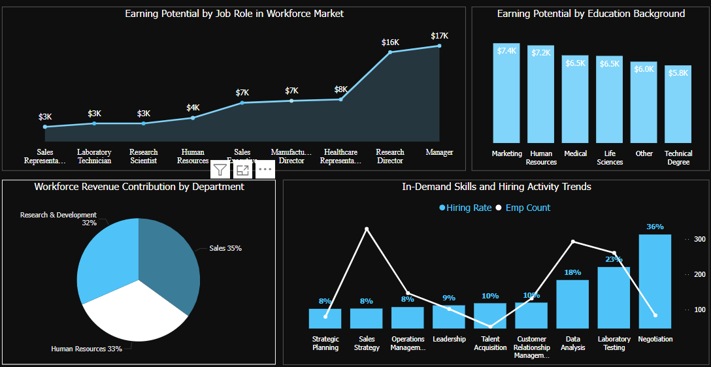
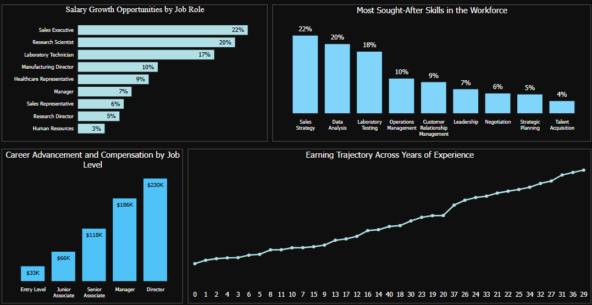
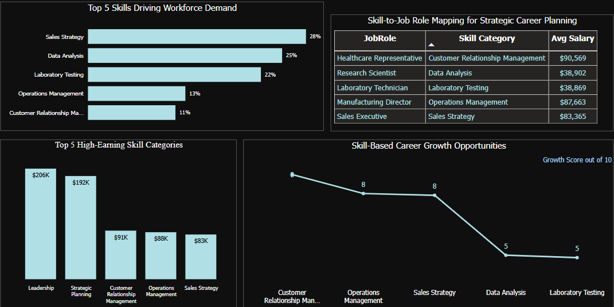

Workforce Trends
Identify top in-demand job roles, department hiring patterns, and education field opportunities across industries.
Identify top in-demand job roles, department hiring patterns, and education field opportunities across industries.
Explore salary distributions by job role, education background, and department to plan better career paths.
Analyze earning progression across job levels and experience to make strategic career advancement decisions.
Discover high-demand skills linked to high-paying job roles and understand their impact on career growth.
